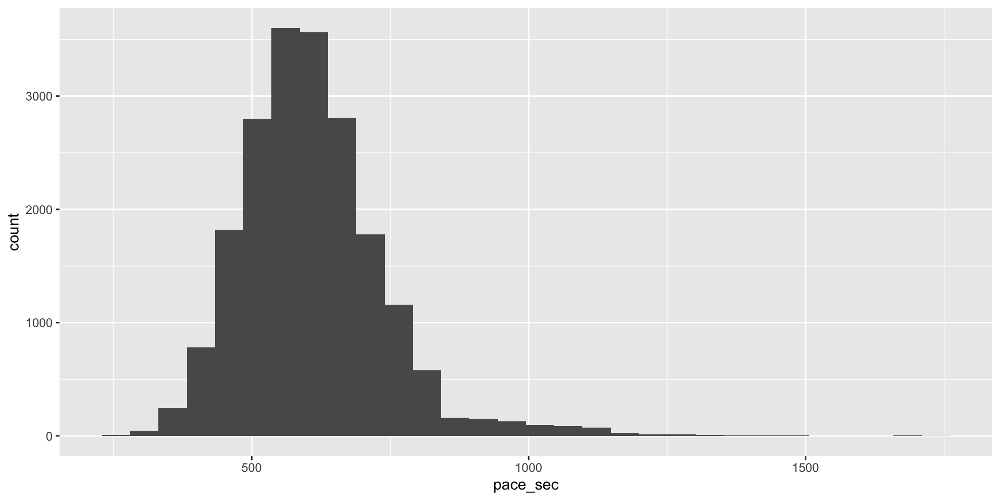
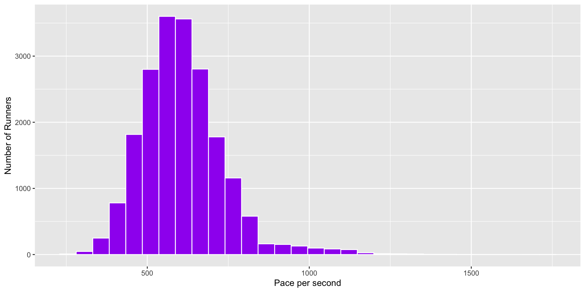
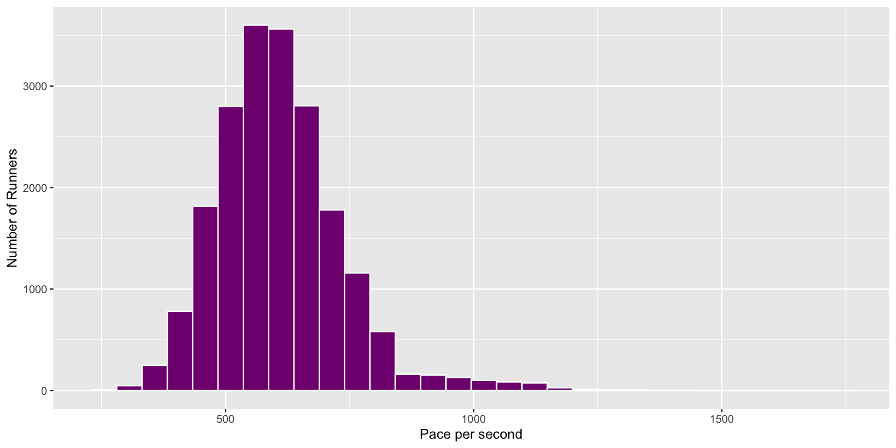
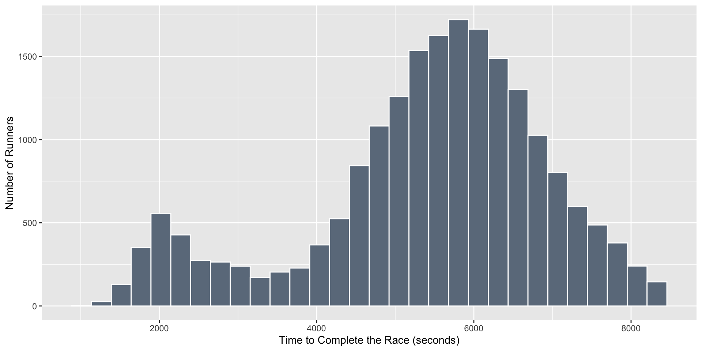

Getting Started with R: Session 2
Before we Get Started
Go to your R Directory and open up your .Rproj file
Create a new syntax file for today (.R)
Save your .R file; you can call it session_2
Remember to comment your code with hashes #
Working with datasets from within RStudio
Datasets included in Base R
Without loading any additional packages, Base R has internal datasets that you can explore
Let’s take a look at a dataset called airquality
Let’s get familiar with a few Base R functions
Let’s get familiar with a few Base R functions
Ozone Solar.R Wind Temp
Min. : 1.00 Min. : 7.0 Min. : 1.700 Min. :56.00
1st Qu.: 18.00 1st Qu.:115.8 1st Qu.: 7.400 1st Qu.:72.00
Median : 31.50 Median :205.0 Median : 9.700 Median :79.00
Mean : 42.13 Mean :185.9 Mean : 9.958 Mean :77.88
3rd Qu.: 63.25 3rd Qu.:258.8 3rd Qu.:11.500 3rd Qu.:85.00
Max. :168.00 Max. :334.0 Max. :20.700 Max. :97.00
NA's :37 NA's :7
Month Day
Min. :5.000 Min. : 1.0
1st Qu.:6.000 1st Qu.: 8.0
Median :7.000 Median :16.0
Mean :6.993 Mean :15.8
3rd Qu.:8.000 3rd Qu.:23.0
Max. :9.000 Max. :31.0
Let’s get familiar with a few Base R functions
'data.frame': 153 obs. of 6 variables:
$ Ozone : int 41 36 12 18 NA 28 23 19 8 NA ...
$ Solar.R: int 190 118 149 313 NA NA 299 99 19 194 ...
$ Wind : num 7.4 8 12.6 11.5 14.3 14.9 8.6 13.8 20.1 8.6 ...
$ Temp : int 67 72 74 62 56 66 65 59 61 69 ...
$ Month : int 5 5 5 5 5 5 5 5 5 5 ...
$ Day : int 1 2 3 4 5 6 7 8 9 10 ...
Use the $ to call out a single column
Missing Data Checks
[1] FALSE FALSE FALSE FALSE TRUE TRUE FALSE FALSE FALSE FALSE TRUE FALSE
[13] FALSE FALSE FALSE FALSE FALSE FALSE FALSE FALSE FALSE FALSE FALSE FALSE
[25] FALSE FALSE TRUE FALSE FALSE FALSE FALSE FALSE FALSE FALSE FALSE FALSE
[37] FALSE FALSE FALSE FALSE FALSE FALSE FALSE FALSE FALSE FALSE FALSE FALSE
[49] FALSE FALSE FALSE FALSE FALSE FALSE FALSE FALSE FALSE FALSE FALSE FALSE
[61] FALSE FALSE FALSE FALSE FALSE FALSE FALSE FALSE FALSE FALSE FALSE FALSE
[73] FALSE FALSE FALSE FALSE FALSE FALSE FALSE FALSE FALSE FALSE FALSE FALSE
[85] FALSE FALSE FALSE FALSE FALSE FALSE FALSE FALSE FALSE FALSE FALSE TRUE
[97] TRUE TRUE FALSE FALSE FALSE FALSE FALSE FALSE FALSE FALSE FALSE FALSE
[109] FALSE FALSE FALSE FALSE FALSE FALSE FALSE FALSE FALSE FALSE FALSE FALSE
[121] FALSE FALSE FALSE FALSE FALSE FALSE FALSE FALSE FALSE FALSE FALSE FALSE
[133] FALSE FALSE FALSE FALSE FALSE FALSE FALSE FALSE FALSE FALSE FALSE FALSE
[145] FALSE FALSE FALSE FALSE FALSE FALSE FALSE FALSE FALSEWhat is happening here?
Activity
How much missing data do we have in the Ozone variable?
[1] 41 36 12 18 NA 28 23 19 8 NA 7 16 11 14 18 14 34 6
[19] 30 11 1 11 4 32 NA NA NA 23 45 115 37 NA NA NA NA NA
[37] NA 29 NA 71 39 NA NA 23 NA NA 21 37 20 12 13 NA NA NA
[55] NA NA NA NA NA NA NA 135 49 32 NA 64 40 77 97 97 85 NA
[73] 10 27 NA 7 48 35 61 79 63 16 NA NA 80 108 20 52 82 50
[91] 64 59 39 9 16 78 35 66 122 89 110 NA NA 44 28 65 NA 22
[109] 59 23 31 44 21 9 NA 45 168 73 NA 76 118 84 85 96 78 73
[127] 91 47 32 20 23 21 24 44 21 28 9 13 46 18 13 24 16 13
[145] 23 36 7 14 30 NA 14 18 20Activity Check
How much missing data do we have in the Ozone variable?
Run this code. What is it doing?
Activity: Create an object
Installing and Loading Packages
You install once. You load every time you want to use the package.
Let’s install and load the tidyverse
[1] ".GlobalEnv" "package:lubridate" "package:forcats"
[4] "package:stringr" "package:dplyr" "package:purrr"
[7] "package:readr" "package:tidyr" "package:tibble"
[10] "package:ggplot2" "package:tidyverse" "package:stats"
[13] "package:graphics" "package:grDevices" "package:utils"
[16] "package:datasets" "package:methods" "Autoloads"
[19] "package:base" 
The core tidyverse packages
ggplot2: data viz
readr: importing/exporting
dplyr: manipulation
forcats: factors
stringr: strings
lubridate: dates/times
tidyr: cleaning/flipping
tibble: tibbles
purrr: iteration
Base R syntax or tidy syntax?
Quick giveaways of tidy code:
Underscores in the function name: read_csv() is the tidy equivalent to Base R’s read.csv()
Using the pipe: %>% or |>
tibbles versus dataframes
Visualization with ggplot2
ggplot2 is the most well-known tidyverse package.

Let’s Build Plots
ggplot2 employs a conceptual framework called the grammar of graphics.
Think layers!
The Data
The Aesthetics (aes)
The geometric object (geoms)
Layers of a ggplot
Data is your dataset
Aesthetics (aes) are the variables you want represented
Geoms are the visualization options
ggplot(data = dataset, mapping = aes(x = variable,
y = variable)) + geom_point()
+ geom_point() # a scatterplot, two cont variables
+ geom_histogram() # one cont variable
+ geom_boxplot() # cont & cat variable
+ geom_line() # two cont variables, x = time
+ geom_bar() # one cat variable
+ geom_col() # one cat variable and one count variableNew Package and Dataset
cherryblossom package and run17 data

Let’s look at our data and make a plot
bib name sex age
Min. : 3 Length:19961 Length:19961 Min. : 6.00
1st Qu.: 6078 Class :character Class :character 1st Qu.:29.00
Median :12128 Mode :character Mode :character Median :35.00
Mean :12300 Mean :37.13
3rd Qu.:18321 3rd Qu.:44.00
Max. :25497 Max. :92.00
NA's :1
city net_sec clock_sec pace_sec
Length:19961 Min. :1078 Min. :1078 Min. : 279.0
Class :character 1st Qu.:4767 1st Qu.:5048 1st Qu.: 524.0
Mode :character Median :5658 Median :6333 Median : 596.0
Mean :5428 Mean :6083 Mean : 608.7
3rd Qu.:6433 3rd Qu.:7439 3rd Qu.: 674.0
Max. :8398 Max. :9896 Max. :1759.0
NA's :3 NA's :3 NA's :3
event
Length:19961
Class :character
Mode :character
Quick Histogram ggplot style
Let’s add color and labels
How did I get colors?
~ 650 colors you can call on
[1] "white" "aliceblue" "antiquewhite" "antiquewhite1"
[5] "antiquewhite2" "antiquewhite3" "antiquewhite4" "aquamarine"
[9] "aquamarine1" "aquamarine2" "aquamarine3" "aquamarine4"
[13] "azure" "azure1" "azure2" [1] "violetred2" "violetred3" "violetred4" "wheat" "wheat1"
[6] "wheat2" "wheat3" "wheat4" "whitesmoke" "yellow"
[11] "yellow1" "yellow2" "yellow3" "yellow4" "yellowgreen"
R also understands hexadecimal color codes (“#800080”)
Same Plot, but with HEX color
Final Activity: Create a histogram
Variable: Time to complete race (net_sec)
Activity Check
Variable: Time to complete race (net_sec)
Next Week
We’ll continue plotting with ggplot2 and learn critical functions from the dplyr package!

S.Kelly | Getting Started with R | Fall 2025